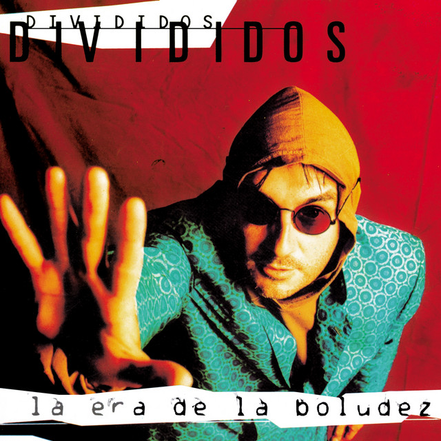

La era de la boludez | El disco legendario que “no tenía hits”
Hoy Divididos es una de las bandas más importantes del rock argentino. Por herencia y por historia propia, el grupo de Ricardo Mollo y Diego Arnedo se ubicó hace mucho tiempo en un sitio privilegiado que conecta con los sonidos más crudos y la tradición folclórica.
Pero no siempre fue así. Los comienzos del trío fueron difíciles, con shows para poca gente y desconfianza de las discográficas, siempre con la sombra de Luca Prodan encima. El primer disco, 40 dibujos ahí en el piso, había vendido poco y sonaba aún menos. El segundo, Acariciando lo áspero, empezó a enderezar un barco que seguía frágil y parecía siempre al borde del naufragio.
En 1993 la banda logró viajar a Los Angeles para grabar su tercer disco. El productor iba a ser Gustavo Santaolalla, que ya había empezado su seguidilla de trabajos míticos de los 90 con distintos grupos del continente. Pero Santaolalla estaba asustado. Su habitual método no funcionaba con Divididos. El ex Arco Iris solía pedir cuarenta canciones antes de empezar las grabaciones. Una técnica que le aseguraba un caudal musical suficiente para elegir lo mejor y descartar lo menos interesante. Pero a Ricardo Mollo eso no lo seducía. No podía componer a pedido.
“Acariciando lo áspero son todos hits y acá no tenemos temas”, le decía Santaolalla a la banda en el estudio, ya en plena grabación. El grupo probó algunas ideas, como una versión de “Agua en Buenos Aires” que finalmente fue descartada.
“Lo que pasó con ‘Agua en Buenos Aires’ fue como una maldición, porque es un tema que tiene cuatro grabaciones en distintos estudios”, le dijo Mollo a la revista Rock Salta. La canción fue grabada en Los Angeles pero quedó afuera. Recién fue publicada en el álbum Otroletravaladna, de 1995, en una versión demo registrada en la sala de ensayo del trío, en Buenos Aires.
Pero en Los Angeles, en 1993, las cosas no marchaban bien. Mollo recordó que tenía algunas ideas sin desarrollar, canciones inacabadas que había empezado a trabajar en su casa. “Mirá, está esto, también”, le dijo el ex Sumo a Santaolalla, casi como un último recurso.
Una de esas ideas empezaba con un riff potente, hardrockero, que no tenía letra. Mollo y Arnedo empezaron a describir el paisaje en el que habían crecido, el del oeste del Gran Buenos Aires, con el tren San Martín como columna vertebral que unía los distintos lugares. Todo mezclado por la habitual lírica ambigua, entre absurda y psicodélica, que el dúo empezaba a acumular. Así nació “Paisano de Hurlingham”, un tema que iba a volverse un clásico de la banda que por entonces completaba el baterista Federico Gil Solá.
El disco se publicó en ese mismo 1993, se llamó La era de la boludez y logró un furor impensado. “Qué ves?” fue el primer hit de una serie de éxitos que sonaron en radios, canales y películas. El trío brindó muchísimos shows en todo el país y se consolidó como una referencia ineludible del rock argentino.
Pero a Mollo no le gusta detenerse demasiado en esos años. Prefiere pensar en lo que viene, más que en lo que pasó. “En eso no puedo pensar, tengo que seguir para adelante y seguir haciendo música”, le decía a Rock Salta mientras recordaba aquella experiencia.